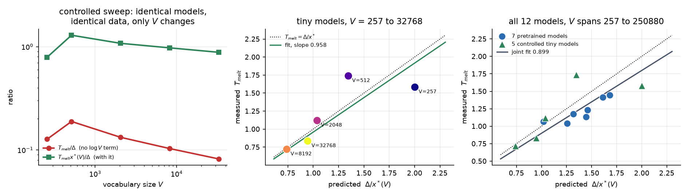

Temperature spectroscopy of a language model's next-token distribution
October 2026
Abstract
Softmax sampling in a language model is exactly the Boltzmann distribution of statistical mechanics. This work builds the rest of the thermodynamics on that identity and measures what it buys for hallucination detection. Solving for the peak of the heat capacity gives a closed-form melting temperature, which holds across 12 models whose vocabularies span 976 times in size. Most of the other ideas were wrong. Eight hypotheses were falsified, and the negative results are kept in full because they are the most informative part. The headline result reproduces on a laptop in about one second.
1The identity
Set the energy of a token to minus its logit, E_i = -\ell_i. Sampling at temperature T then gives
which is the Boltzmann distribution, so entropy, heat capacity and the rest come out of one forward pass. Two of these quantities were already in use under other names. Predictive entropy is exactly S(1), and varentropy is exactly the heat capacity C(1), since
2The melting law
Heat capacity peaks where probability leaves the top token and floods the vocabulary. Solving dC/dT = 0 for one ground state above V states at gap \Delta gives
where x^\ast = \log V + c and c is a slow correction of order one. The law holds across 12 models, including 5 small transformers trained on identical data where only the vocabulary size changed. Including the \log V term cuts the model-to-model scatter by 58 percent.

3What went wrong
Eight hypotheses were falsified. One detector worked on the first model, failed to replicate on the second, and then failed a clustering-threshold sweep on the first model too, so it is withdrawn.
Plain token entropy points the wrong way for free-form answers. On Qwen2.5-0.5B its signed AUROC is 0.098, so a higher entropy there meant the model knew the answer.
The free-form results rest on 12 to 30 questions per condition and on two models from one family. The effects are large and the samples are small.
4Closest prior work
Arnold et al. [1] treat logits as energies over whole generated sequences, where the mapping does not hold. Reeb and Wolf [2] already have the identity in Equation 2, and this work does not claim it. Du, Yang and Welleck [3] pick a temperature from the turning point of the entropy curve, and that point provably sits below the melting temperature.
- Arnold, Holtorf, Schäfer and Lörch. Phase transitions in the output distribution of large language models. arXiv:2405.17088, 2024.
- Reeb and Wolf. Tight bound on relative entropy by entropy difference. arXiv:1304.0036, 2015.
- Du, Yang and Welleck. Optimizing temperature for language models with multi-sample inference. arXiv:2502.05234, 2025.